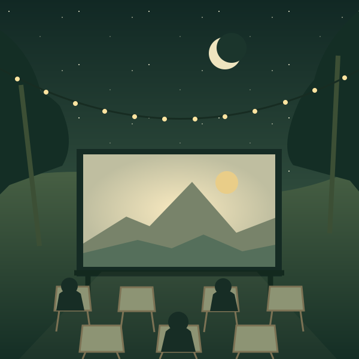

01Otra vez.
Como la
primera vez.CLÁSICOS QUE NUNCA SE APAGAN
Como la
primera vez.CLÁSICOS QUE NUNCA SE APAGAN
EL VERANO SE VE MEJOR AQUÍ
Una pantalla, el cielo abierto y esa película que siempre recordarás. Bienvenido a tu próxima noche favorita.
Quiero vivirlo ↗
01 / LA EXPERIENCIA
Nos gusta el cine que se comparte. El que empieza con una charla, huele a palomitas y termina mirando las estrellas.
Trae a tu gente y las ganas de desconectar. Nosotros ponemos la pantalla, el ambiente y las historias.
02 / ELIGE TU PLAN
Una programación para todos los gustos.
Apúntate y entérate de las próximas sesiones.
Propuesta de programación. Las fechas y películas se anunciarán próximamente.
03 / TU BUTACA EMPIEZA AQUÍ
Únete al club de Luna Cinema y recibe información sobre la programación y las próximas sesiones.
✦ Solo buenas historias. Tú decides cuándo salir.Proyecto académico de Gabriel Galán García · 2SI. El formulario envía nombre, email y preferencia a AWS para guardar la inscripción y generar una notificación al responsable del proyecto. No introduce tu email en una lista de suscriptores SNS. Utiliza datos de prueba durante la demostración. Para solicitar la eliminación de un registro, contacta con el autor del proyecto a través del repositorio enlazado en la entrega.